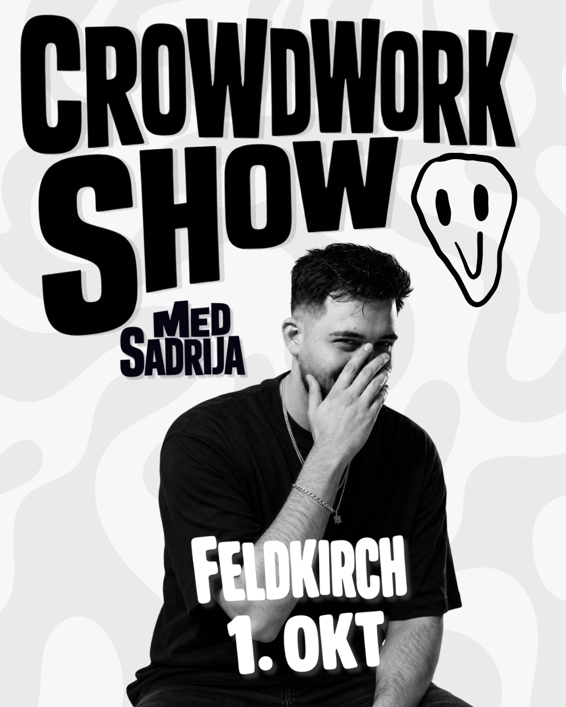
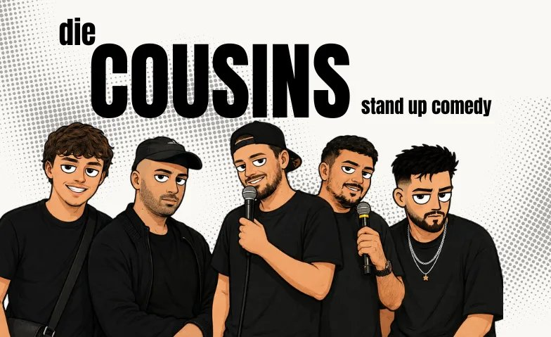

Grenzgänger. Geschichtenerzähler. Träumer.
Aufgewachsen zwischen zwei Welten. Mit einem Fuß im Alltag, mit dem anderen auf der Bühne.
Vom Notizbuch unterm Bett zur ausverkauften Bühne.
Zwischen zwei Kulturen, zwei Sprachen und zwei Arten, die Welt zu lesen — genau dort beginnt fast jede Geschichte, die auf dieser Bühne erzählt wird. Was als Notizen im Handy anfing, wurde irgendwann zu Pointen, dann zu ganzen Programmen.
Heute stehen Alltag, Familie und die kleinen Absurditäten des Lebens im Mittelpunkt — mal zum Lachen, mal zum Nachdenken, oft beides gleichzeitig. Wenn das Licht ausgeht und das Mikro angeht, zählt nur noch der Moment im Raum.
„Comedy, die trifft, weil sie ehrlich ist — und Texte, die nachhallen, weil sie nichts beschönigen."
— Stimme aus dem PublikumCrowdwork Show.
Stand-up mit dem Publikum statt über das Publikum: In der Crowdwork Show entsteht der Abend im Raum — jede Show ist anders. Nach Feldkirch am 1. Oktober geht es weiter in Zürich und Luzern.

Die Cousins.

Eine eigene Show, ein eigenes Format: die Stand-up-Mixshow „Die Cousins".
Interviews & Gespräche.
Pressebilder.
Bildmaterial in Druckqualität für Veranstalter, Redaktionen und Booking-Anfragen. Zum Öffnen auf ein Bild klicken — die Kollektion wird laufend erweitert.